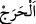
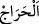
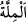

sarılarak kalblerin tasfiyesi konusunda kalblerle cihâd edin. O’nun varlığı ve cömertliği
ile bâkî olmak için kendi varlığını O’nun varlığında ifnâ ederek ruhların tahliyesi
(süsleyip bezenmesi) konusunda ruhlarla cihâd edin. Diğer yaratılmışlar arasında bu
ikram ve üstünlükler için: “O, sizi seçti”
Allah sizi seçmese, bu cihad için size istîdad vermese ve sizi ona hidâyet etmese,
Allah uğrunda cihad etmezdiniz. Nitekim şâir şöyle demiştir:
Siz olmasaydınız biz aşk nedir bilmezdik.
Aşk da olmasa sizi tanımazdık.
Hakkını vererek cihadın esaslarından birisi de nefis ile mücâhede de bir an bile
gevşeklik göstermemektir. Nitekim şöyle denilmişir:
Ey Rabbim, benim cihadım aralıksızdır.
Senin toprağının hepsi benim için bir sınır kulesidir.
“Din hususunda üzerinize hiçbir zorluk yüklemedi” “__WORD__ ve “__WORD__ birbirine
yakın olmak ve iki şey arasında darlık tasavvur etmektir. Darlık/zorluk için “__WORD__
denilmiştir. Yâni Allah, yerine getirilmesi meşakkatli bir şeyle mükellef kılarak dinde
bir zorluk yaratmadı. Onun için âmâ, topal, maddî imkânı ve biniti olmayan, anne-
babasının kendisine izin vermediği kimseden cihadda zorluğu/günahı (harac) kaldırdı.
Kâşifî der ki: “Yani, size sıkıntı yüklemedi ve dinin hükümlerinde güç
yetiremeyeceğiniz şeyleri teklif etmedi. Yolculukta namazı kısaltmak, su bulunmadığında
teyemmüm etmek, hastalık ve seferde iken oruç tutmamak gibi zaruret hâllerinde
ruhsatlar verdi.”
et-Te’vîlâtü’n-Necmiyye’de der ki: “Yâni Allah seyr ilallah’ta ve kendisine
ulaşmakta bir zorluk yaratmadı. Çünkü sen Allah’a kendi seyrinle değil, O’nun seyriyle
seyr eder/yol alırsın. Yine O’na senin ona yaklaşmanla değil, O’nun sana yaklaşması ile
yaklaşırsın. Her ne kadar sen senin O’na yaklaşmanı senden bilsen ve senin O’na
yaklaşmanı O’nun sana yaklaşmasının neticelerinden görmesen de bu böyledir. O’nun
sana yaklaşması senin O’na yaklaşmandan öncedir. Nitekim kudsî bir hadiste Allah:
“Kim bana bir karış yaklaşırsa ben ona bir kulaç yaklaşırım.”[59] buyurmuştur. Bir
kulaç iki karışa işârettir. Bunlardan bir karış senin O’na yaklaşmandan önce, bir karış
da senin O’na yaklaşmandan sonradır. Hatta sen O’na yürüyerek gitsen, O sana koşarak
gelir.”
“Babanız İbrahim’in dininde (de böyleydi).” Yâni babanız İbrahim’in dininde olduğu
gibi Allah sizin dininizi geniş tuttu. Ya da Celâleyn’de geçtiği üzere ‘Babanız
İbrahim’in dinine tâbi olun.’
Râğıb der ki: “__WORD__ (Millet) kelimesi, din gibi kullarının kendisiyle Allah’ın
yakınlığına ulaşmaları için peygamberlerin diliyle meşrû kıldığı esasların adıdır. Din